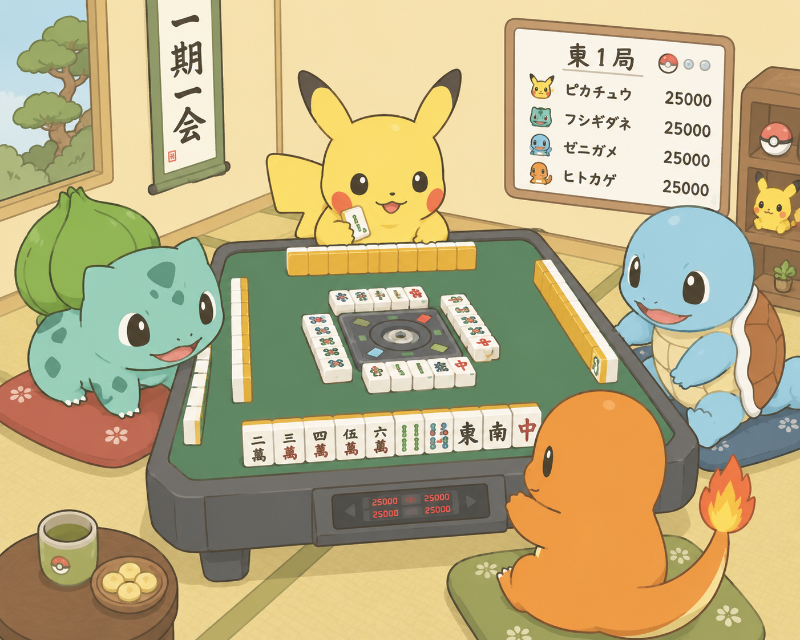

📖 公式役・詳細ルール確認ポータル
役の成立条件や、詳細なルールをいつでも確認できます。
役の成立条件や、詳細なルールをいつでも確認できます。
詳細リファレンス（外部リンク）
日本プロ麻雀協会 役一覧
公式プロ団体による信頼性の高い役一覧。各役の成立条件や鳴き制限をシンプルにスピード確認！
▶
麻雀ドラゴン 公式役・詳細解説
手牌の画像付きで圧倒的に分かりやすい！初心者への説明や、特殊な複合役の確認にも最適。
▶
家族みんなで楽しく麻雀！
